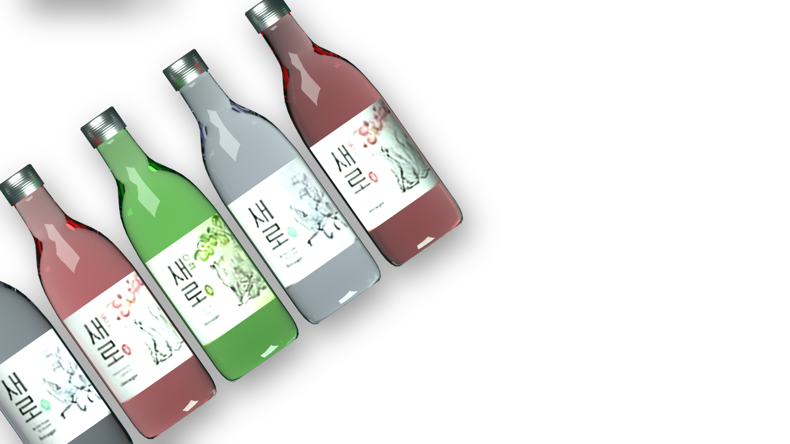
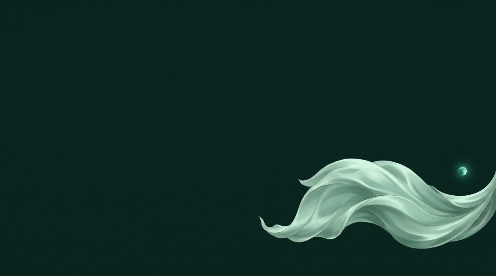
주제와 새로 소개
롯데칠성음료 · 2022.9.14 출시 · 제로 슈거 소주
왜 여우였나 ① 디자인과 반응
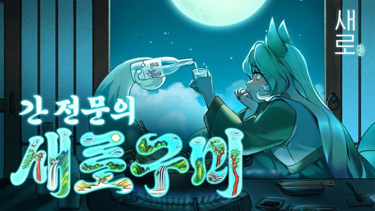
‘간 전문의’ 설정 지적 기사2022.9탄생 스토리재업로드본(2022.10) 좋아요 1.5만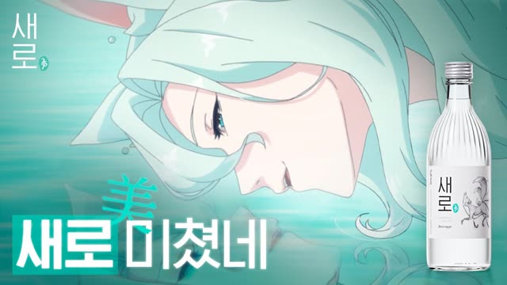
2023.3이도현 편좋아요 1.7만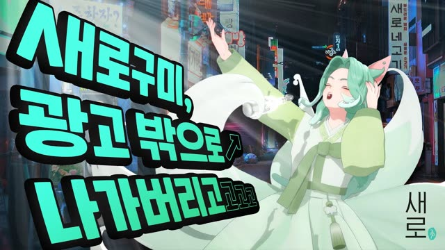
2023.10돌잔치좋아요 2.3만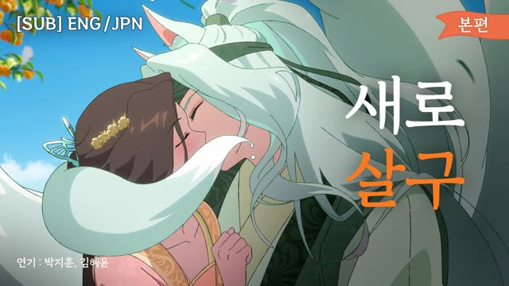
2024 광고대상 금상2024.4새로 살구좋아요 5.4만 · 본편 9편 중 1위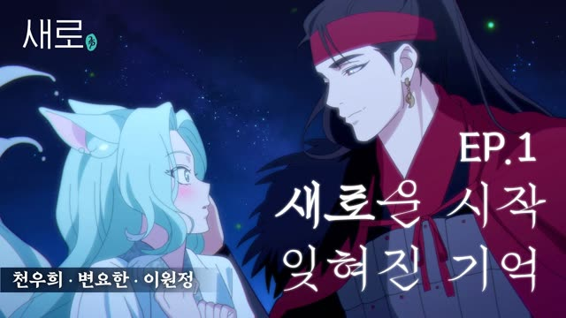
광고 시사회 팬 150명2024.9새로구미뎐 1화좋아요 1.0만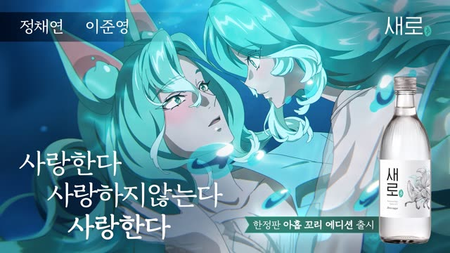
2025.117번째 이야기좋아요 6,612디자인의도
회사변신하는 구미호 ≈ 희로애락의 술 · 도자기 병과 한국적 정서
대행사귀여운 2등신 마스코트 → 날카로운 애니메이션 그림체
반응
K디자인 2024 Winner · 팬아트
작은 지적: 첫 광고 노래는 민원으로 삭제 · 비슷한 구미호와 닮았다는 의견
출처: 썸네일·좋아요 유튜브 롯데칠성 주류(2026.9.30 수집, 누르면 원본) · 아이뉴스24 · 한국일보 커리업 · 투데이신문(2022.12, 2023.1) · K디자인 · 보도자료 1426 · 1443
왜 여우였나 ② 회사가 밝힌 이유
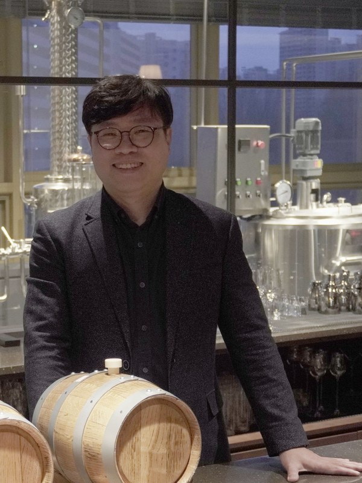
목적무엇을 원했나
처음엔 재미있게 알리기, 갈수록 관계
“다양한 속성을 보다 재미있게 전달하기 위해” 보도자료 1175 원문(2022.9.21) · 2023 돌잔치 출품자료 · 보도자료 1423·1579
발표자 해석광고·신제품에 덜 기대도 꾸준히 팔리는 고정 고객층 만들기
방법어떻게
기준무엇으로 잴까
재는 기준도 적었다: 점유율 1/10 → 충성도 (목표 수치 없음)
첫 목표는 같은 인터뷰 · KPI는 2024 YouTube Works 출품자료(2023 돌잔치, 회사·대행사 제출)
회사가 스스로 충성도를 목표로 적었다 → 그 결과는 공개됐을까?발표자 해석 · 6~10번에서 확인
출처: 비마이비 윤종혁 인터뷰(2023.2.9) · 롯데칠성음료 보도자료 1175 · 로열티는 2024 YouTube Works 출품자료(2023 돌잔치) · 교감·친밀은 보도자료 1423 · 1579
타 업체와 비교
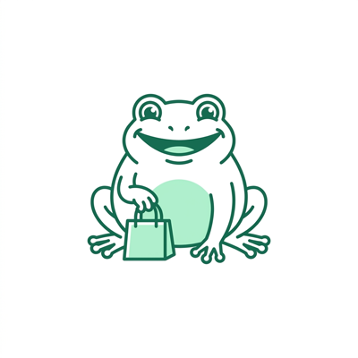
진로 두꺼비하이트진로 · 2019.4 재출시
굿즈
캐릭터숍 두껍상회 · 굿즈 140여 종
뿌리 1954년부터 쓰던 두꺼비 → 귀엽게 되살림
공개된 성과7개월 1억 병 · 두껍상회 18만 명+ · 2020 에피 골드
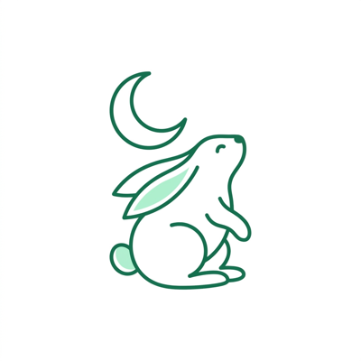
토끼소주2016.2 뉴욕 출시
라벨
라벨 상징 · SNS 입소문
뿌리 2011 토끼해 · ‘달에 사는 토끼’ 설화
공개된 성과판매 규모 자료는 찾지 못함
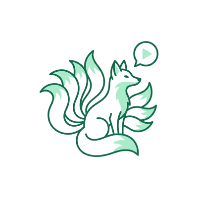
새로구미롯데칠성 · 2022.9 출시와 동시
이야기
애니메이션 연재 · 세계관 · 팝업
뿌리 전래 설화 속 구미호 → 새로 만듦
공개된 성과7개월 1억 병 · 2023 에피 금상 3
첫 소주 캐릭터 마케팅은 두꺼비(하이트진로 ‘업계 최초’). 새로의 차이는 광고를 연재물처럼 이어 간 것
출처: 하이트진로 보도자료(2021.4.21) · 뉴스핌(2022.1) · 매드타임스(2020.8.3) · 서울경제(2016.6.23) · 이데일리(2019.12.11)
캐릭터를 활용한 브랜딩 캠페인
2022
2023
2024
2025
2026
에피·스파익스는 회사·대행사 발표 기준. YouTube Works는 결선 진출(수상 아님)
출처: 롯데칠성음료 보도자료 1292 · 1324 · 1443 · 1599 · 대한민국광고대상 수상작 아카이브 · 테크M(2025.4.29) · K디자인 어워드
새로(제품) 누적 판매 병수 · 보도자료가 밝힌 달성 시점
근거 보도자료: 1186 680만 · 1245 1억 · 1421 4억 · 1468 5억 · 1550 7억 · 1593 8억
달성 신호 확인
판매는 새로라는 제품 전체의 성과라 캐릭터 몫은 분리할 수 없음
해마다 2억 병대에서 오르내린다
누적 병수를 연도별로 나눈 발표자 추정 · 달성 시점 사이는 고르게 팔렸다고 가정
연 2.2~2.9억 병(추정), 뚜렷한 증가 추세는 없음판매량 기준이라 새로 산 사람과 다시 산 사람은 구분할 수 없음
유튜브 · 1분 이상 광고 본편 9편 · 영상 이름을 누르면 원본으로 이동
근거: 유튜브 롯데칠성 주류 직접 수집(2026.9.30) · 게시 기간·길이·광고 노출 방식이 달라 비교에 한계가 있음
타겟팅과 인사이트
누구를
20·30대 주 소비층여성 선호 ↑ → 남성 캐릭터 목소리 이도현
어디서 · 수업의 네 축
④ 콘텐츠·소셜유튜브 · 인스타 · 팝업
어느 단계 · 퍼널
① 인지 · ② 관심5A로 A1 인지 · A2 호감 · A3 질문
내가 보고 싶었던 것: 관심이 고정 고객과 매출로 이어졌는가
이어졌나?
이어졌나?
관심까지는 확인된다 → 그다음 연결이 보이는지, 판매량과 공개된 숫자로 확인해 본다
출처: 롯데칠성음료 보도자료 1162 · 1297 · 1550 · 1600 · 이코노미스트(2023.4.16) · 2024 YouTube Works 출품자료 2~3쪽 · IR 실적 자료 · 3주차 강의 퍼널과 코틀러 5A
같은 판매량, 다른 속사정 · 작년 → 올해 고객의 흐름
남은 고객(고정 고객)새로 온 고객(신제품·갈아탄 사람)떠난 고객막대 높이(판매량)만 공개 · 비율은 설명용 예시
새로 온 고객신제품 효과
단, 다래를 낸 2025년 2분기 롯데 소주 매출은 3.6% 감소 (IR)
출처: 롯데칠성음료 보도자료 1421·1593·1654 · IR 실적(2023.4Q, 2025.2Q) · 서울경제 2023.10.1 · 천지일보 2026.6.26 · 부산일보 2026.8.23(국세청 출고량 86.2만→79.3만㎘) · 호텔앤레스토랑 2026.7.2(엠브레인 가정용 구매, 2026.5 기준 1년) · 키위서베이 2024.12(2,540명) · 456억은 IR 소주·새로 매출로 계산
공개된 숫자와 공개되지 않은 숫자
제품별 판매집계 확인
오리지널과 살구·다래·오미자를 나눠 집계 · 과일맛 매출 “약 27%↑”를 직접 발표 · 보도자료 1654
채널별 판매집계 확인 · 업계 인용
가정용(마트·편의점)과 유흥용(식당·주점) · 롯데 소주 2025년 가정용 1,832억, 유흥용 1,678억 원 · 한국경제(업계 인용)
신규 · 지속 · 이탈 고객살 수 있음 · 이용 여부 모름
영수증 패널 2만 명으로 나눠 보는 분석 서비스가 이미 있다 · 엠브레인(유료)
새로 음용자 조사실시 확인 · 결과 비공개
2026년 리뉴얼 전에 했다고 밝힘 · 보도자료 1593
출처: 롯데칠성음료 보도자료 1292·1550·1593·1654 · IR 실적 자료 · 사업보고서 2025(DART) · 한국경제 2026.7.8(업계 인용) · 엠브레인 구매딥데이터 서비스 소개
동영상 중심 마케팅 비판
인정할 점: 규제 안에서 이야기로 주목을 끌었고, 광고제가 인정했다
1본 사람은 많지만 다시 만날 통로가 약하다
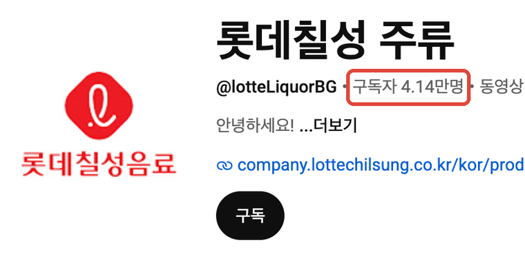
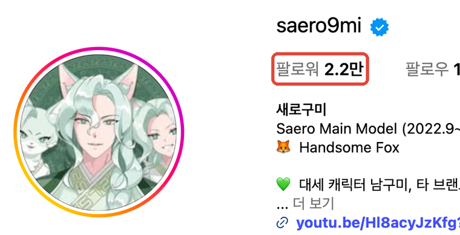
약 3,400분의 1영상 42편 조회 1억 4천만 회+ → 구독 4.14만 · 팔로워 2.2만
2조회수로는 광고 노출과 자발적 관심을 가를 수 없다
300배 넘는 차이15초 광고는 1,334만 회 조회에 좋아요 220개 · 본편은 0.54%
출처: 유튜브 직접 확인(2026.9.30~10.1, 롯데칠성 주류 · @saero9mi) · 3주차 강의(삼성카드 사례)
내가 한다면
누구에게최근 90일 안에 새로를 산 25~34세 성인 멤버십 회원편의점·마트에서 L.POINT를 적립한 구매 기록 · 광고 수신 동의 회원만
어떻게무작위로 절반 나눠 A에만 새로구미 ‘다음 이야기’를 보낸다멤버십 앱 · 롯데멤버스가 보내고 롯데칠성은 집단별 결과만 받음 · 퍼널 ④ 유지 · 네 축 ② 오운드·CRM
① 인지 · ② 관심
④ 다시 삼 · 고정 고객핵심 KPI
매출
KPI
이야기 열람률
90일 재구매율
1인당 새로 구매액
데이터
멤버십 앱 열람 기록
L.POINT 구매 기록
같은 구매 기록의 금액
연결 확인
열람한 사람 중 다시 산 비율
A − B 차이 = 이야기의 효과
A − B 차이 = 매출 기여
캠페인 전 · KPI 활용 ①
목표와 기준선을 정한다핵심 KPI는 하나 · B 집단이 기준선 · 성공 기준을 미리 (예: 재구매율 차이 2%p 이상)캠페인 중 · KPI 활용 ②
끊긴 단계를 찾는다열람률이 낮으면 보내는 때와 제목을, 재구매가 그대로면 이야기 내용을 바꾼다캠페인 후 · KPI 활용 ③
다음 예산을 정한다기준을 넘으면 대상을 넓히고, 못 넘으면 이야기를 고쳐 다시 잰다보고 싶은 연결에 KPI를 미리 걸어 두면, 캠페인이 끝난 뒤 ‘관심이 매출이 됐는가’에 답할 수 있다
경품·포인트는 주지 않음(판매촉진 금품 금지) · 멤버십 밖 구매는 안 보임(두 집단에 똑같이 적용) · 11번의 답: 산 사람을 다시 만나고, 조회수 대신 재구매로 평가
APPENDIX
A · 회사 측 자료
B · 수상 이력
D · 1차 자료 · 인터뷰
E · 비교 사례
회사·대행사 보도자료의 인용은 회사 발언, 기자·매체 보도는 매체 해석으로 나눔. 에피·스파익스 수상은 회사·대행사 발표 기준. 점유율은 새로가 아닌 롯데칠성 소주 전체.
발표 자료 불러오는 중
0%
클릭하면 전체 화면으로 시작 · Space로 바로 시작